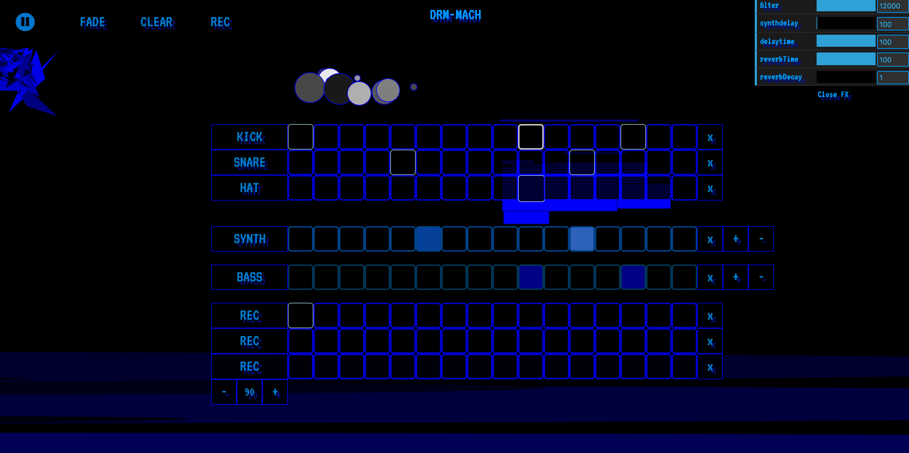
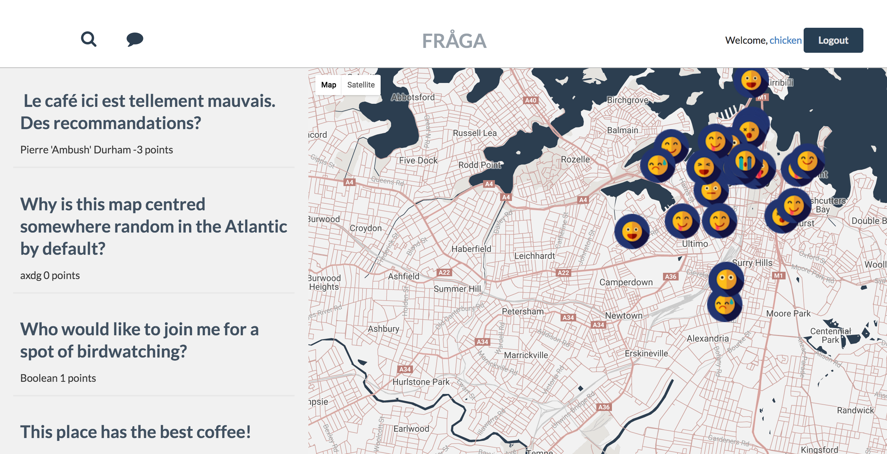
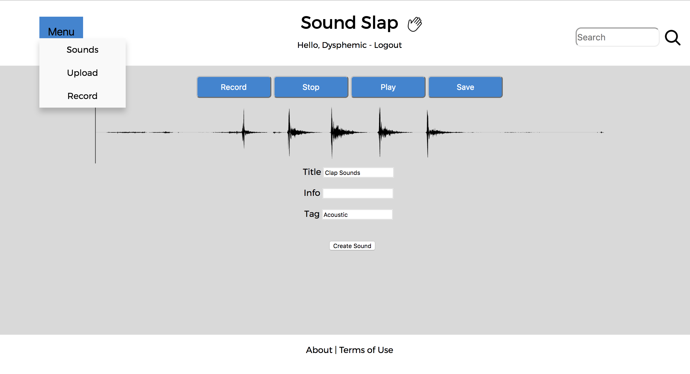
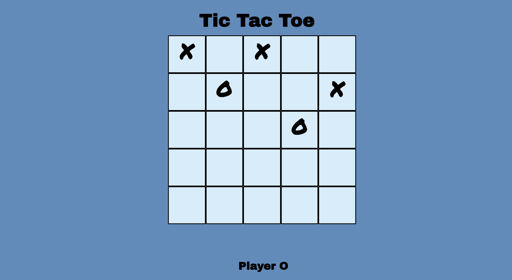

I'm Julian Treweeke.
I'm a Sydney based Front-End developer
About me
I have spent my working life making music professionally and working as a sound engineer.
Although my focus has been mainly on audio, I have always been intrigued and interested in coding.
When I was a kid I used to program on a Commodore 64 and as a teenager I made interactive games on multimedia's Director.
After returning to Sydney from living in Melbourne for many years I felt like I needed a change and decided to pursue a career in Web Development.
I was looking for a way to strictly devote my time to learning to code and so I enrolled in General Assembly's Web Development Immersive course.
I found the course both challenging and forfilling and it opened my eyes to how creative coding is.
From a background as a sound engineer, I understand the need to constantly learn and adapt to new technologies and I see many similarities from the audio design world to the tech industry. I really enjoy the mix of creative and technical thinking to problem solve and I love that as a dev you are always learning and that you can never know it all, there is always something new that you can pursue.
Contact Info
Julian Treweeke: 0431185767
Email: juliantreweeke@gmail.com
Education
General Assembly
Web Development Immersive May 2017 - Aug 2017
General Assembly is a leader in education in the tech industry and have locations around the world.
The Web Development Immersive course is a full time, 3 month course that teaches students all the way through from the fundamentals of programming to modern front-end and back-end web development and teaches students how to work in the industry
The most important aspect of this course is the emphasis on teaching students how to learn and how to adapt and learn technologies quickly as is needed in the tech industry.
NMIT
Advanced Diploma of Sound Engineering 2010 - 2012
This course taught students live sound engineering and how to operate and run a recording studio. It also covered the science behind what audio is, post production techniques used in the film industry and business skills needed for audio freelancing.
Work History
Dysphemic
Founder, Sound Engineer 2010 - 2017
From composing songs for Advertisements, Film and Computer Games, producing music for Musicians and Rappers to touring Internationally as a DJ, right through to Web Design, Video Editing, Managing artists, Event management, Licensing, Sales, Budgeting and Online Promotion, while running Dysphemic I have done it all in the Music Business Industry.
Skills
Bootstrap
Semantic UI
Backbone
React
Node
Git
Premier
Cubase
Projects
DRM-MACH
A drum machine and synthesizer sequencer with visuals controlled by analysing audio frequencies. You can also record into the browser and then add those sounds to the composition. This is purely a front-end project and my favourite and last as part of General Assemblies Web Dev course.
FRAGA
A location based social media app. This was a group project built with Ruby on Rails and uses geolocation mapping and the google maps api to connect users together to answer and comment on questions.
Sound Slap
Audio sample sharing site for Musicians and Music Producers. Users can share and search for samples and record audio directly into the browser. Built with Ruby on Rails.
Tic Tac Toe
A 2 player computer game. This is the first project I wrote with Javascript. Users can customize the board size from a 3x3 grid up to a rediculous 250x250
If your interested in contacting me for development opportunities or if you just want to say hi or meet up for a coffee shoot me an email or give me a call!